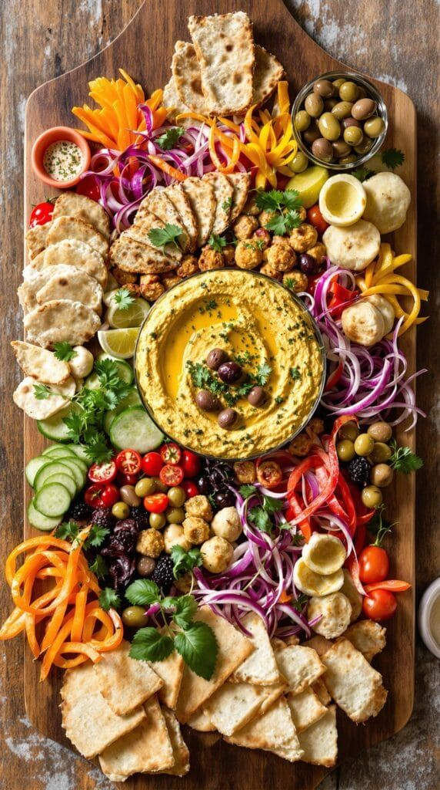

A vibrant, nutrient-dense Mediterranean board bursting with wholesome fats and high-protein elements. Loaded with artisanal cheeses, fresh figs, boiled eggs, cured prosciutto, olives, and crunchy roasted almonds.

Place small ramekins for olives and raw wildflower honey around a large wooden serving platter. Position cheese wedges and sliced hard-boiled eggs in focal areas.
Artfully drape thin prosciutto slices and arrange crispy bacon strips around the cheese blocks for an elegant, elevated charcuterie presentation.
Cluster sweet red grapes, halved fresh figs, and whole roasted almonds into the remaining gaps for vibrant color and antioxidant balance.
Garnish with fresh thyme sprigs, cracked black peppercorns, and a light drizzle of extra-virgin olive oil before serving.